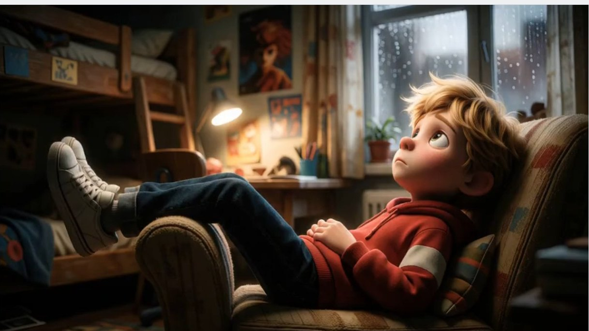
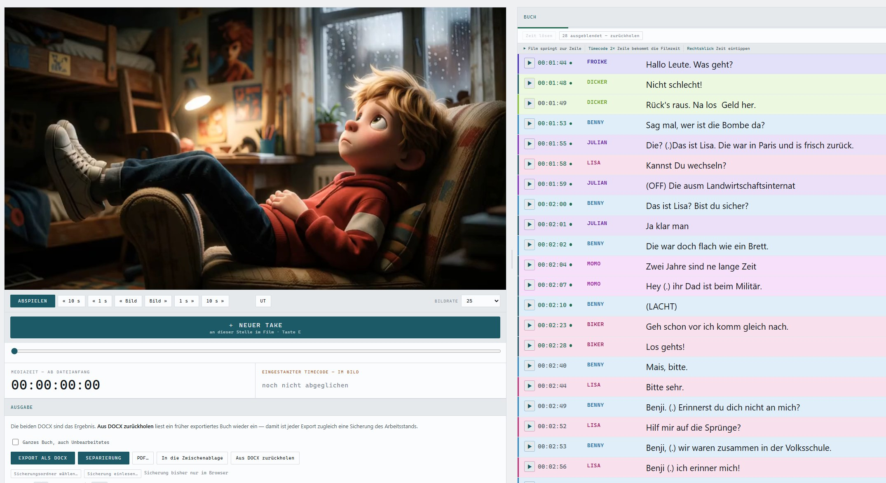
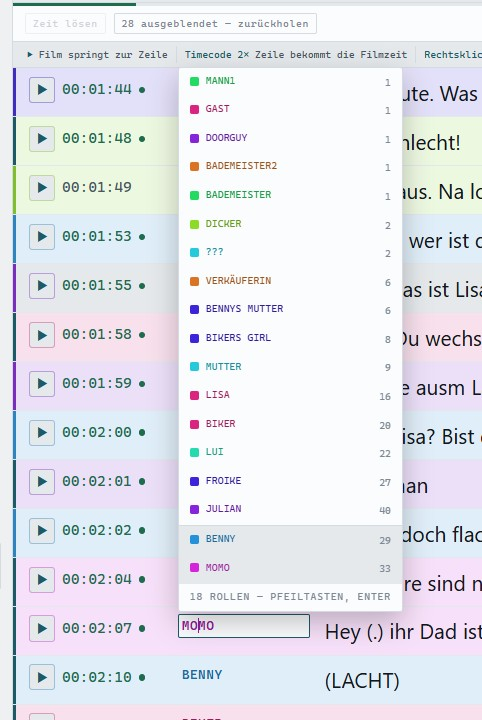
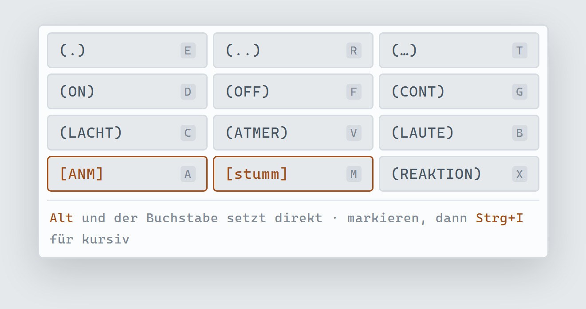

Für Synchronautoren und Rohübersetzer
Schreiben, ohne den Film zu verlassen. Rolle, Einsatz und Regieangabe genau dort, wo du gerade bist.
Läuft im Browser · Der Film bleibt auf deinem Rechner · Rund 50 % Zeitersparnis je Buch

Der Ablauf
Du bleibst im Film und schreibst nebenher. Kein Programmwechsel, kein Suchen, kein Abtippen von Zahlen.
Womit du anfängst
Manche schreiben lieber aus dem Film heraus, Zeile für Zeile. Andere haben schon eine Rohübersetzung und wollen sie am Bild umschreiben. Takewrite macht beides, und die Wahl steht gleich beim ersten Öffnen da.
Du setzt jeden Take dort an, wo er im Film liegt. Ein Klick auf den Timecode, Rolle vergeben, Satz schreiben. Nichts muss vorbereitet werden.
Deine Übersetzung kommt als Gerüst herein, jede Zeile an ihrer Stelle im Film. Du gehst sie durch und machst Dialog daraus — das Abtippen entfällt.
Kommt dein Rohbuch aus einer KI? Dann verlang CSV — als einziges der vier Formate kann eine KI es dir direkt ins Chatfenster schreiben. Word und Excel sind gepackte Archive; die müsstest du ohnehin erst durch ein Tabellenprogramm schicken. Diesen Satz kannst du übernehmen:
Gib mir das Ergebnis als CSV aus, mit Semikolon getrennt, UTF-8. Erste Zeile als Überschrift: Timecode;Rolle;Text Eine Zeile je Take. Timecode als hh:mm:ss:ff. Text mit Semikolon oder Anführungszeichen in " " setzen.
Was sich ändert
Was beim Schreiben hilft
Kein Untertitelprogramm mit einer Rollenspalte obendrauf. Jede Funktion existiert, weil sie an einem echten Buch gefehlt hat.
Eingestanzter Timecode
Beginnt der Timecode im Bild bei 10:00:00:00? Liegt er schief? Einmal den Wert aus dem Bild ablesen und eintragen — ab da rechnet Takewrite jede Anzeige und jeden Export auf den eingestanzten Timecode um. Kein Umrechnen von Hand, und Sprünge an Aktwechseln fallen beim Prüfen der Punkte sofort auf.
Rollen
Die Auswahl zeigt alle vergebenen Rollen, häufigste zuerst. Bleibt eine übrig, genügt Enter. Jede Figur hat ihre Farbe — beim Blättern siehst du am Rand, wer spricht.
Takes
Vorlagen sind lückenhaft, Untertitel sind gerafft. Was gesprochen, aber nirgends notiert ist, setzt du mit einer Taste an genau die Stelle — samt Rollenvorschlag.
Regieangaben
Die Angaben, die in jedem Buch stehen, liegen auf Tab und den F-Tasten und in einer Leiste über dem Textfeld. Das Leerzeichen dahinter kommt mit.
Tastatur
A und D sekundenweise, Pfeiltasten bildweise, J K L als Shuttle wie im Schnittraum. W und S wählen die Zeile, Enter setzt sie — und Strg+Z nimmt jeden Schritt zurück.
Sicherung
Jede Änderung wird sofort gesichert — im Browser und, einmal gewählt, als Datei in deinem Projektordner, mit einem Stand je Arbeitstag. Sogar ein exportiertes Buch lässt sich wieder einlesen.
Suche
Ein Feld über dem Buch, es sucht in Rolle und Text zugleich. In der Treffermenge arbeitest du ganz normal weiter — Esc, und alle Zeilen sind wieder da.
Bild
Die Trennlinie zwischen Film und Buch lässt sich ziehen, ein Doppelklick schaltet auf Vollbild — auf Wunsch mit dem laufenden Take als Untertitel im Bild.
Ausgabe
Eine echte Word-Datei, kein Nachbau — Titelblatt, Tabelle, Maße aufs Zeichen genau. Dazu die Separierung nach Rollen und PDF über die Druckansicht. Eine eigene Studio-Vorlage richten wir auf Anfrage ein.
So sieht es aus
Kein Player, keine Textverarbeitung daneben, kein drittes Fenster mit der Rohübersetzung. Links läuft der Film, rechts entsteht das Buch — und beides sieht man gleichzeitig.
Diese Bilder sind aus einer laufenden Arbeit. Jede Figur trägt ihre eigene Farbe, ein grüner Punkt heißt: diese Zeit hat der Autor bestätigt. Regieangaben wie (OFF) oder (.) stehen mitten im Satz, wo der Sprecher sie braucht.



Größenordnung
Bei drei Handgriffen pro Einsatz — ablesen, abtippen, kontrollieren — sind das dreieinhalbtausend Handgriffe, bevor ein einziger Satz besser geworden ist. Genau die fallen weg. Was bleibt, ist das Schreiben.
In meiner eigenen Arbeit hat sich die Zeit für ein Buch dadurch etwa um die Hälfte verkürzt — nicht weil ich schneller formuliere, sondern weil zwischen zwei Sätzen nichts mehr liegt.
Unterm Strich steht eine Zeitersparnis von rund fünfzig Prozent je Buch — nicht beim Formulieren, sondern bei allem, was nicht Formulieren ist.
Preise
Ein Synchronbuch bringt einen vierstelligen Betrag. Takewrite kostet im ersten Jahr einen Bruchteil davon — und ab dem zweiten noch die Hälfte. Alle Aktualisierungen inklusive.
Demo
0 €
keine Zahlung, keine Rechnung
Gratis · läuft sofort im Browser, nichts zu laden
Einzelplatz
389 €netto, im ersten Jahr
zzgl. 19 % USt. · 462,91 € brutto
Für Synchronautoren und Rohübersetzer
Alle Preise netto zzgl. gesetzlicher Umsatzsteuer · Geschäftskunden mit USt-IdNr. rechnen im Reverse-Charge-Verfahren ab · Läuft nicht automatisch weiter — du verlängerst für 189 €, wenn der nächste Film kommt, auch nach einer Pause · Was du geschrieben hast, bleibt deins, auch ohne Verlängerung
Bevor du fragst
Nein. Takewrite nimmt dir die Fleißarbeit ab, nicht das Schreiben. Die Formulierung kommt von dir — das Werkzeug sorgt dafür, dass zwischen zwei Sätzen nichts liegt außer dem nächsten Satz.
Ja. Der Handgriff ist derselbe: Text gegen das laufende Bild schreiben, jede Zeile an ihrer Stelle im Film verankert, am Ende eine saubere Ausgabe. Ob in der Zeile dann ein Take, ein Untertitel oder eine Bildbeschreibung steht, ist Takewrite gleichgültig.
Was ihm fehlt, sind die untertitelspezifischen Prüfungen — Zeichen je Zeile, Lesegeschwindigkeit, Mindeststandzeit. Wer danach ausliefert, braucht dafür weiter sein gewohntes Werkzeug. Fürs Schreiben selbst ist Takewrite auch dort schneller.
Der Export kommt in einer sauberen Buchvorlage: Titelblatt mit Titel, Autor, Genre und Synopsis, danach die Tabelle. Hat euer Studio eine eigene Word-Vorlage, schickt sie uns — wir richten sie ein, und der Export übernimmt Spaltenbreiten, Zeilenhöhen und Ränder auf den Punkt. Das ist Handarbeit von uns, kein Automat, der scheitern kann.
Nein. Der Film wird lokal geöffnet und verlässt deinen Rechner nicht. Es gibt keinen Server, auf den etwas ginge. Das ist keine Datenschutzerklärung, sondern eine Bauweise.
Film als MP4, MOV oder MKV — alles, was dein Browser abspielt. Eine vorhandene Textquelle als SRT. Ausgabe als Word-Dokument in eurer Vorlage, als Separierung nach Rollen und als PDF — dazu JSON für alles Weitere.
Ja. Es braucht einen aktuellen Browser, sonst nichts — keine Installation, keine Bibliotheken, kein Konto.
Probier es an dem, der gerade auf deinem Schreibtisch liegt. Die Demo läuft sofort im Browser: alle Funktionen, 40 Takes, nichts zu installieren.
Impressum
Angaben gemäß § 5 DDG
Adam Nümm
Maybachufer 28
12047 Berlin
E-Mail: mail@adamnuemm.de
Umsatzsteuer-Identifikationsnummer gemäß § 27a UStG: DE278354100
Takewrite läuft vollständig im Browser. Filme, Bücher und Arbeitsstände verbleiben auf dem Rechner des Nutzers; diese Seite setzt keine Cookies und bindet keine Drittdienste ein.